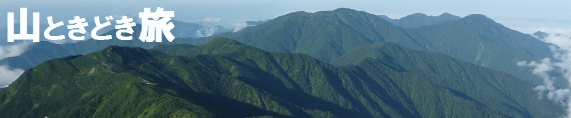

新着記録
| 日付 | ： | 2026年1月25日（日） |
|---|---|---|
| メンバー | ： | 単独 |
| アクセス | ： | 車 |
| コース | ： | 道の駅 保田小学校 - 小保田バス停 - 嵯峨山登山口 - 小保田峠 - 嵯峨山 - 小保田峠 - チバンドキャニオン - 小鋸山 - 林道 - 鋸山 - 十州一覧台 - 地獄覗き - 日本寺大仏 - 仁王門 - 道の駅 保田小学校 |
| 日付 | ： | 2026年1月12日（月） |
|---|---|---|
| メンバー | ： | 単独 |
| アクセス | ： | 電車、バス |
| コース | ： | 上川乗 - 浅間峠 - 熊倉山 - 生藤山 - 醍醐丸 - 和田峠 - 陣馬山 - 陣馬新道口 - 陣馬高原下 |